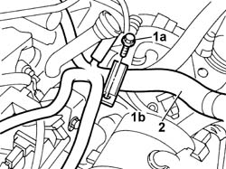
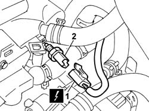
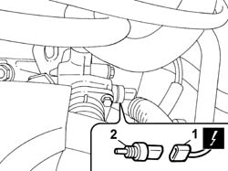

1056B50 COOLANT TEMPERATURE SENSOR - R + R
- Path
- Procedures > 10 ENGINE > 1056 PETROL INJECTION SYSTEM > 1056B MULTI-POINT INJECTION SYSTEM (MPI) > 1056B50 COOLANT TEMPERATURE SENSOR - R + R
- Kind
- repair procedure (removal / refitting; the operation number is the code)
- Applies to
- engines: 2.0 16v, 3.0 24V V6; all production periods
- Interactive page
- https://sloeber94.github.io/elrnDB-fUlss/en/#/179007020
Applies to: engines: 3.0 24V V6; all production periods
 Removing
Removing
 Refitting
Refitting- Disconnect the negative battery terminal.
Description | Connector | |
|---|---|---|
. | Battery | A001B |
Op. 5010B18 CLIMATE CONTROL UNIT AIR INTAKE - R.R.
Op. 1048A47 SLEEVE FROM RIGID PIPE TO THROTTLE BODY - R R
1. Undo the fixing bolt (1a) and remove the mounting collar (1b)
2. Move the wiring to free up the work area.

Applies to: engines: 3.0 24V V6; all production periods
- Position a suitable container for collecting the engine coolant.
1. Disconnect the electrical connection from the engine coolant temperature sensor.
Description | Connector | |
|---|---|---|
1 | Engine coolant temperature sensor/sender unit | K036 |
2. Undo the engine coolant temperature sensor and remove it.

Applies to: engines: 3.0 24V V6; all production periods
Refitting
Removing- Refit the engine coolant temperature sensor.
- Connect the electrical connection to the engine coolant temperature sensor.
Description | Connector | |
|---|---|---|
1 | Engine coolant temperature sensor/sender unit | K036 |
- Position the wiring and fasten the collar.
Op. 1048A47 SLEEVE FROM RIGID PIPE TO THROTTLE BODY - R R
Op. 5010B18 CLIMATE CONTROL UNIT AIR INTAKE - R.R.
- Connect the negative battery terminal.
Description | Connector | |
|---|---|---|
. | Battery | A001B |
Applies to: engines: 2.0 16v; all production periods
Removing
RefittingOp. 5530B56 BATTERY DRIP TRAY COVER - R.R.
- Disconnect the negative battery terminal.
Op. 5010B18 CLIMATE CONTROL UNIT AIR INTAKE - R.R.
See in Op. 1048A10
- Position a suitable container for collecting the coolant fluid.
1. Disconnect the electrical connection for the air temperature sensor.
2. Undo the coolant temperature sensor and remove it.

Applies to: engines: 2.0 16v; all production periods
Refitting
Removing- Fit the coolant temperature sensor in place and tighten it.
- Connect the electrical connection for the water temperature sensor.
See in Op. 1048A10
Op. 5010B18 CLIMATE CONTROL UNIT AIR INTAKE - R.R.
- Connect the negative battery terminal.